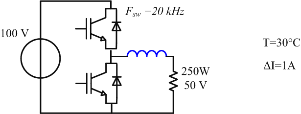
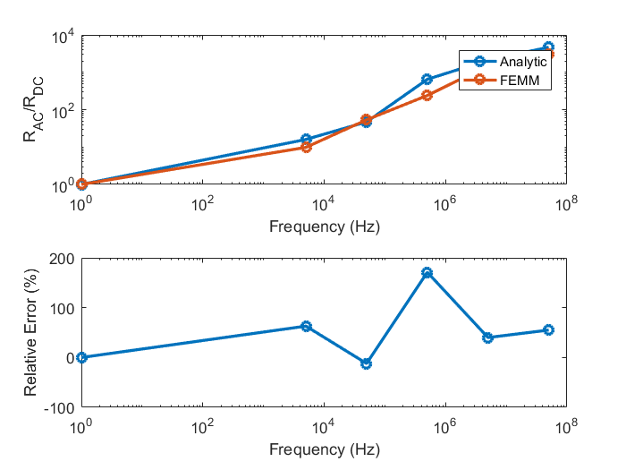

Optimization Problem
The framework posseses a series of implemented functionalities to help in the design of power converters
Description of the optimization procedure
The general algorithm description and the different steps are described in the following figure:It is composed of the following steps:
- Problem Definition: In this step the optimization problem is described that is the topology, the operation point of the system, the different elements of the system to be optimized, the objective function, the constraints of the problem and the optimization algorithm to be used
- Optimization: at this step the whole optimization procedure is
launched:
- Input definition: at the beginning of each iteration the optimization algorithm defines the inputs (dimensions) of the element to be optimized
- Parameter computation: the different parameters of the elements (mass, volume...) as well as the equivalent simulation models (electrical, thermal...) are calculated
- Simulation resolution: the solver (analytic, time or frequency) gets the equivalent circuits of each component and assembles them according to topology defined at the beginning of the problem (Step 1). Then it performs a simulation and dispatches the different waveforms to the components
- Output Data calculation : once the component knows the excitations it is withstanding it can calculate a series of additional data (temperature, losses, magnetic field...) which is necessary for the design of the components
- Objective function and constraints calculation: the optimization gets the contribution of each component to the objective function to minimize (mass, volume, cost...) and assembles all the constraints related to the problem
- Next iteration determination: the optimization algorithm (gradient-descent...) determines wether the current iteration point is a minimum point or not. In case it is not, it determines the next iteration point
- Solution validation: the optimal solution using different numerical simulations to validate the solution based in analytic equations. If the error does not fall below a certain threshold, reconsideration of the model in this exploration area needs to be performed
Specific instructions for the optimization problem
The main class that contains all the methods and that need to be defined at the begining of each optimization problem is the Optimizer class. To create it we type var1 = OptimProblem.Optimizer(arguments). Ex:myOptProblem = OptimProblem.Optimizer();
As it was shown in the figure above, at the beginning of the optimization problem we need to define as well which components are going to be optimized. The instruction to add a component is optimizer variable.addComponent(component variable). An extra parameter can be added if the several equal elements are going to be introduced. Ex. suppose we want to optimize an inductor.
myOptProblem = OptimProblem.Optimizer; myInductor = Comp3d.InductorCustomEI; myOptProblem.addComp3d(myInductor);
Supposse we want to design a converter with two equal elements. For example, we have a converter with two cells in parallel and therefore two equal output inductors
myOptProblem = OptimProblem.Optimizer; myInductor = Comp3d.InductorCustomEI; myOptProblem.addComp3d(myInductor,2);
Objective function
All the optimization algorithms try to minimize the objective function. The different objective criteria that can be minimized are:- mass
- losses
- volume
- cost
myOptProblem = OptimProblem.Optimizer;
myOptProblem.criteria = {'mass','losses'};
myOptProblem.weights = [0.9 0.1];
Scaling inputs
For the mathematical optimization algorithm the variables can be set into a different scale to improve convergence. These options are:- Logarithmic scale with offset(Recommended): the bounds and the inital points are transformed into a logarithmic scale and then from 0 onwards(option = {'log' 'offset'})
- Logarithmic scale normalized: the bounds and the inital points are transformed into a logarithmic scale and the set between 0 and 1 (option = {'log' 'norm'})
- Logarithmic scale: the bounds and the inital points are transformed into a logarithmic scale (option = 'log')
- Normal scale: the bounds and the inital points are transformed into a linear scale between 0 and 1 (option = 'norm')
- Offset: an offset is added to the initial point and bounds (option = 'offset')
myOptProblem = OptimProblem.Optimizer;
myOptProblem.scale = {'log' 'offset'};
Optimization algorithms
Several optimization algorithms can be employed in the optimization framework. These are:- MATLAB fmincon algorihtm: more information is found here. (option = 'GradientDescent')
- MATLAB MultiStart algorithm: more information is found here. (option = 'GradientDescentMS')
- MATLAB GlobalSearch algorithm: more information is found here. (option = 'GradientDescentGS')
- MATLAB Genetic Algorithm: more information is found here. (option = 'Ga')
myOptProblem = OptimProblem.Optimizer;
myOptProblem.optimAlgo = 'GradientDescent';
Optimization constraints
The design of the components to certain physical constraints (maximal temperature, magnetic saturation...) or system constraints (standards, maximal pressure loss,...)
The physical constraints are defined in the constraints property of the object. Ex. imagine we want to set the maximal temperature of the inductor at 90°C
myInductor = Comp3d.InductorCustomEI; myInductor.constraints myInductor.constraints.temperatureMax = 90;
ans =
struct with fields:
temperatureMax: 80
BsatRate: 0.9500
Leq: []
Lmax: []
Lmin: []
iDc: []
iMax: []
iRMSmax: []
iRippleMax: []
Optimization example
In the presented example, we will optimize the output inductor of a DC-DC converter as shown in the following figure. We will follow the optimization procedure step by step
- We create the optimization problem class
- We create the inductor, in this case we will use the InductorCustomEI class. For more information about class creation click here We declare the inductor as the element to be optimized with addComp3d method
- We declare the circuit (For more information about circuit creation see OOTEE documentation) and add it to the circuit property of the optimizer class
- Once the problem has been determined we choose the scaling type and the optimization algorithm and the mass as objective function
- The optimization is then launched
- The optimal result is validated with FEMM simulations for this case
myInductor.validateFEMM;
FEMM analysis started... Elapsed time is 6.513891 seconds. FEMM analysis started... Elapsed time is 4.628545 seconds. FEMM analysis started... Elapsed time is 4.608381 seconds. FEMM analysis started... Elapsed time is 5.157381 seconds. FEMM analysis started... Elapsed time is 6.156258 seconds. FEMM analysis started... Elapsed time is 8.259362 seconds. ==================================================== Validation of [Comp3d.InductorCustomEI] ---------------------------------------------------- rAC Factor Rel. Mean Error: 52.84 % ---------------------------------------------------- L value Rel. Mean Error: -13.44 % ---------------------------------------------------- Winding Losses Analytic: 2.639 W FEMM: 2.645 W Rel. Error: -0.2325 % ---------------------------------------------------- ====================================================The error for copper losses is below 0.1% and as a consequence, the optimal solution is accepted
- The optimal solution is displayed
myOptProblem = OptimProblem.Optimizer;
myInductor = Comp3d.InductorCustomEI(); myOptProblem.addComp3d(myInductor);
circuit = Ckt.CktComposite();
n = circuit.createNode(4);
circuit.addGnd(n(2));
circuit.addCkt(Vdc(100),{n{1},n{2}});
dcdcConvert = Chopper();
dcdcConvert.modul.fCar = 20e3;
dcdcConvert.opPoint.alphaBuck = 0.5;
circuit.addCkt(dcdcConvert,{n{1},n{3},n{2}});
circuit.addCkt(myInductor.electricModel,{n{3},n{4}});
circuit.addCkt(Resistor(10,'load',1),{n{4},n{2}});
myOptProblem.circuit = circuit;
Warning: The electric model of Comp3d.InductorCustomEI: has changed
In this example, we want to see as well the output voltage and the output cell voltage.
n{3}.name = 'mid';
n{3}.record = 1;
n{4}.name = 'out';
n{4}.record = 1;
We determine as wel the air temperature and we set the maximal current ripple at 1 A
myInductor.excitations.thermal.tAir = 30; myInductor.constraints.iRippleMax = 1;
myOptProblem.optimAlgo = 'GradientDescent'; myOptProblem.scale = {'log' 'offset'}; myOptProblem.criteria = {'mass'};
myOptProblem.solveOptimizationProblem;
First-order Norm of
Iter F-count f(x) Feasibility optimality step
0 13 4.906598e-01 8.899e+00 7.404e-01
1 26 1.615876e+00 0.000e+00 2.303e+00 5.737e-01
2 41 1.343268e+00 0.000e+00 2.428e+00 2.772e-01
3 54 1.010031e+00 0.000e+00 9.186e-01 4.035e-01
4 68 8.111293e-01 0.000e+00 4.573e-01 1.970e-01
5 82 5.316873e-01 0.000e+00 3.049e-01 3.578e-01
6 95 4.963766e-01 0.000e+00 1.015e-01 8.383e-02
7 109 3.811806e-01 0.000e+00 3.663e-01 1.091e-01
8 123 2.932668e-01 0.000e+00 6.608e-02 1.112e-01
9 137 2.822957e-01 0.000e+00 2.002e-02 2.305e-02
10 151 2.324344e-01 0.000e+00 5.289e-02 9.408e-02
11 165 2.209026e-01 0.000e+00 2.056e-02 1.860e-02
12 179 2.210753e-01 0.000e+00 1.855e-02 1.092e-02
13 193 2.207054e-01 0.000e+00 5.097e-03 1.560e-02
14 206 2.207211e-01 0.000e+00 4.000e-03 1.763e-03
15 219 2.093287e-01 0.000e+00 7.444e-03 2.568e-02
16 232 2.088073e-01 0.000e+00 3.907e-03 2.107e-02
17 245 2.086315e-01 0.000e+00 2.586e-03 1.132e-02
18 258 2.086072e-01 0.000e+00 8.013e-04 7.157e-03
19 271 2.061083e-01 0.000e+00 2.454e-03 2.469e-02
20 284 2.059411e-01 0.000e+00 3.732e-04 1.377e-02
21 297 2.059339e-01 0.000e+00 1.602e-04 1.259e-03
22 310 2.053871e-01 0.000e+00 7.966e-04 1.784e-02
23 323 2.053745e-01 0.000e+00 1.424e-04 1.354e-03
24 336 2.053731e-01 0.000e+00 7.355e-05 9.698e-04
25 349 2.053736e-01 0.000e+00 7.813e-05 2.838e-04
26 363 2.053737e-01 0.000e+00 7.660e-05 1.532e-04
27 394 2.053737e-01 0.000e+00 3.633e-05 6.360e-06
28 407 2.052656e-01 0.000e+00 1.345e-03 8.238e-03
29 420 2.052653e-01 0.000e+00 7.158e-04 1.537e-03
30 433 2.052653e-01 0.000e+00 6.415e-04 4.270e-04
First-order Norm of
Iter F-count f(x) Feasibility optimality step
31 446 2.052653e-01 0.000e+00 6.063e-04 3.271e-04
32 459 2.052652e-01 0.000e+00 4.097e-04 1.252e-03
33 472 2.052645e-01 0.000e+00 3.040e-04 8.390e-04
34 485 2.052631e-01 0.000e+00 1.857e-04 2.318e-03
35 498 2.052625e-01 0.000e+00 5.120e-05 7.245e-04
36 512 2.052624e-01 0.000e+00 4.025e-05 1.303e-04
37 534 2.052624e-01 0.000e+00 7.018e-06 3.809e-05
38 547 2.052429e-01 0.000e+00 1.174e-03 4.009e-03
39 560 2.052417e-01 0.000e+00 3.698e-04 2.749e-03
40 573 2.052415e-01 0.000e+00 2.936e-04 2.028e-04
41 586 2.052412e-01 0.000e+00 2.764e-04 8.734e-04
42 599 2.052410e-01 0.000e+00 1.474e-04 1.631e-03
43 612 2.052410e-01 0.000e+00 7.043e-05 3.320e-04
44 627 2.052410e-01 0.000e+00 4.113e-05 4.234e-04
45 642 2.052410e-01 0.000e+00 4.818e-05 8.973e-05
46 657 2.052410e-01 0.000e+00 1.016e-04 1.816e-04
47 673 2.052409e-01 0.000e+00 8.379e-05 2.319e-04
48 686 2.052410e-01 0.000e+00 5.842e-05 1.107e-04
49 699 2.052410e-01 0.000e+00 8.265e-05 3.751e-04
50 713 2.052410e-01 0.000e+00 8.211e-05 7.337e-05
51 738 2.052410e-01 0.000e+00 2.924e-06 2.517e-05
Local minimum possible. Constraints satisfied.
fmincon stopped because the size of the current step is less than
the selected value of the step size tolerance and constraints are
satisfied to within the selected value of the constraint tolerance.
Successful optimization! Exit flag = 2. Change in X too small.
myInductor.displayInformation; myInductor.drawExcitations; myInductor.drawComponent;
====================================================
Information of [Comp3d.InductorCustomEI]
----------------------------------------------------
Shape
Dimensions
legWidth: 0.006035
legThickness: 0.04169
airGap: 0.0003992
windingCoreDistance: 0.0006
interTurnSpace: 0.0001
nTurns: 40
conductorWidth: 0.0001015
conductorHeight: 0.009807
----------------------------------------------------
Materials
electricConductor: Copper
electricInsulation: UPETS
magneticCore: 3C90 TM(25-200kHz)
----------------------------------------------------
Geometric Data
Manufacturing Volume: 0.05763 l
Weight: 0.2052 Kg
----------------------------------------------------
Cost Data
Total: $ 0.00
----------------------------------------------------
Optimization Constraints
temperatureMax: 80
BsatRate: 0.95
iRippleMax: 1
----------------------------------------------------
Electric Parameters
Inductance: 0.001228 H
DC resistance: 0.09789 Ohm
----------------------------------------------------
Output data
Current Dc: 4.952 A
Current Max: 5.452 A
Current RMS: 4.96 A
Current Ripple: 1 A
Current Density: 4.982 A/mm²
Joules losses: 2.639 W
B Max: 0.3325 Tesla
Core losses: 0.01553 W
Temperature: 80 °C
====================================================
As shown, the constraints (Maximal temperature and current ripple are respected)
Another important utility is the display GUI of the simulation waveforms in the time and frequency domains (Optim Problem class.simulationSolver.displayCurves)
myOptProblem.simulationSolver.showResults;